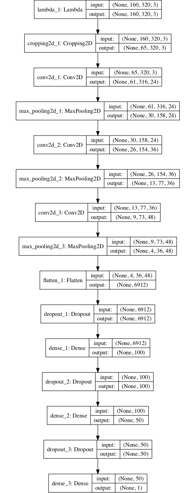
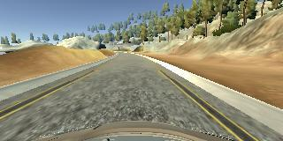
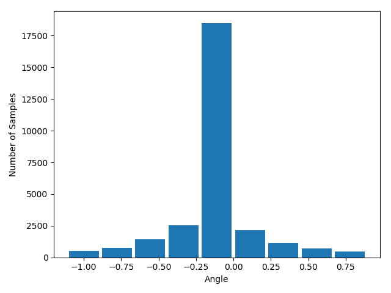
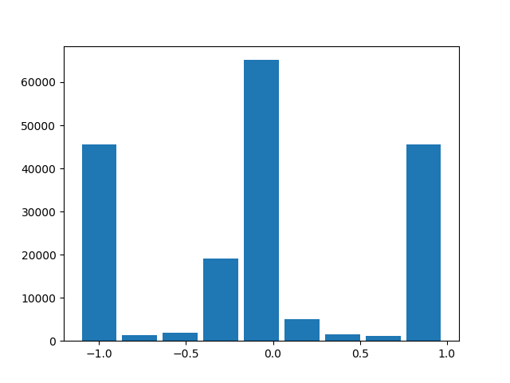
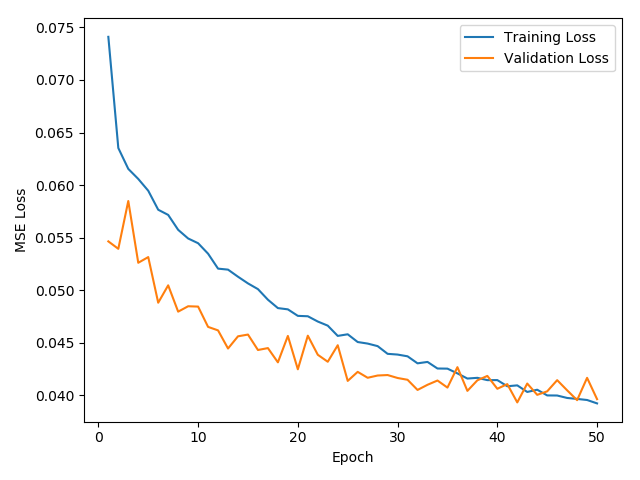
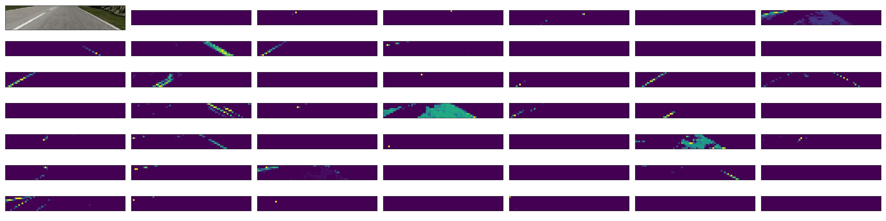

Drive in a simulator
Programming Language:
- Python
The goals of this project are the following:
- Use the simulator to collect data of good driving behavior
- Build, a convolution neural network in Keras that predicts steering angles from images
- Train and validate the model with a training and validation set
- Test that the model successfully drives around track one without leaving the road
- Summarize the results with a written report
Section 1: Model Architecture and Training Strategy
1. Model architecture
The following figure shows the architecture of my model.
- First, I normalized all pixels of an input frame to [-1, 1].
- Second, I use Cropping2D to remove sky and the hood from every single frame.
- Third, 3 (5x5) convolutional layers are used to extract visual features from input frame. All convolutional layers have a RELU activation function to introduce nonlinearity. Each convolutional layer is followed by a MaxPooling2D layer to reduce the size of feature maps.
- Then, 1 flatten layer [model.py line 39] convert the feature maps to a vector and two fully connect layers are used to predict the final result.
Predicting the angle of the steering wheel is a regression problem. Thus I used “mse” loss function.

2. Attempts to reduce overfitting in the model
- Dropout: The model contains dropout layers in order to reduce overfitting.
- Data collection: On both tracks, I drive the car Clockwise (2 loops) and counterclockwise (1 loop) and save data.
- Training: The model was trained and validated on different data sets to ensure that the model was not overfitting. The model was tested by running it through the simulator and ensuring that the vehicle could stay on the track.
- Data Augmentation: Every training frame has 50% probability to be horizontally flipped during training.
3. Model parameter tuning
The model used an adam optimizer, so the learning rate was not tuned manually.
4. Appropriate training data
Training data was chosen to keep the vehicle driving on the road. I used a combination of center lane driving, recovering from the left and right sides of the road. Based on the ground truth:
- If the current angle is 0, then the correction value for data from the left and right camera is set to a small value.
- Otherwise, a larger correction value is used. Using this way can avoid the car from performing as a snake.
All data are randomly split into two subsets: 80% for training and 20% for validation. The model normalized input to [-1, 1] and crop out the top and the bottom parts to remove meaningless context.
The following two figures are the original input and the result after cropped.
| Original Input | Cropped Input |
|  |
The following shows the number of collected data. As you can see that, after using data from all 3 cameras and randomly horizontally flip frames, the distributation of the data is more balance.
| Raw Data | Use all 3 cameras & Data Augmentation |
|  |  |
Section 3: Training History and Model Visualization
This figure shows the loss history during training. 
I also visulized the trained model and tried to understand what features the model learned. 
Section 4: Conclusion and Future work
In this project, I proposed a Convolutional Network to predict the angle of the steering wheel running in an emulator.
The trained model successful negatives the car. Even in the second track (more challenging than the first one), the model still performs great.
One of the possible drawback of the current model is taht it was only trained on the data collected from 2 tracks. Thus, it may cannot perform perfectly in other unseen scenario.
Thus, in the future, I would like to train the model using more data collected from different scens.